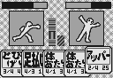
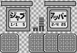
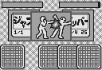
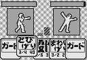

Fighting Card Game
Yomuyamo

Å@How to read your opponents movesÅAhow to create an opportunity to strike, and how to unleash attacks faster.
Å@This is a card-style fighting game where calculation (ESP?) means everything.
ÅöÅ@How To UseÅ@Åö
Å@Use WinISD (P/ECE Communicator) to transfer "yomyamo.pex" to the P/ECE.
Å@Press exit in the title screen to quit.
ÅöÅ@RulesÅ@Åö
Å@This is a 1v1 fighting game. The first player to reduce their opponent's HP to 0 by selecting cards and attacking wins.
Å@Each attack card has a "wind up" time before the attack occurs. If both players attack at the same time, the attack with the shorter wind up time will hit. The attack with the longer wind up time will be canceled.
Å@In the next action, the attacker hit by the shorter attack will suffer a 3-count penalty (or 6-count if the attack is a sweep or throw). In other words, the next attack time will look like so:
For the person who hit: Post action cooldown Å{ Next action wind-up
For the person who was hit: 3-count (or 6-count) penalty Å{ Next attack wind-up
For example:
In the start of this game, when both players are in the same position, Player 1 selects "Jab" (1-count windup) and Player 2 selects "Cross" (2-count wind-up). Player 1's attack happens after 1-count of time has passed, and it hits player 2 in the "wind up" state.
If player one chooses "Divekick" (3-count wind-up) and Player 2 chooses "Cross" (2-count wind-up), then Player 1's attack will occur after 1+3 and Player 2's will after 3+2, so Player 1's will hit again.

Å@Å@Å®Å@Å@
Å@Å@Å®Å@Å@
Å@In addition to attacking, you can "guard," which counts as a previous action and incurs a cool-down. If you guard in time with your opponent's attack, you can perform your next action without taking damage (except in case of a "throw") and without a penalty.
Å@Some minor points:
ÅE If a player is hit by a sweep or throw, the opponent will fall and the penalty will be 6 counts instead of 3.
ÅE If both players' attacks hit at the same time, they will both take damage. Depending on the opponent's attack, the state of the player will either be "hit" or "fall." However, a throw will not result in a collision, and will win unilaterally.
ÅE If you are in the guard state at the same time as your opponent's attack, you will still be in the guard state.
ÅE A throw can damage an opponent even in a guard state.
Å@Actions are done by playing cards in your hand. Each hand consists of 5 cards, restored at the end of each round.
Å@The 20 cards are split between the two players and their contents are consistent between rounds. The breakdown is 3 cards for "Guard" and "Jab," and 2 cards for each of the others. The cards are not mixed or exchanged, so no one player can play "Guard" four times or "Throw" three times.
Å@If both players are still standing after all 20 cards have been used, the player with the most remaining HP wins.
ÅöÅ@Action ListÅ@Åö
ÅEGuard ÇRx
Guards against attack. A successful guard saves you from taking damage, incurs no penalty or cooldown, and your opponent's penalty is the cooldown after their attack. However, throws will defeat guards.
ÅEJab ÇRx Power 5 Wind-up 1 Cooldown 1
Since it's so weak, it's mostly used for canceling attacks. If it hits you get a 2-count head start on your next attack.
ÅECross ÇQx Power ÇPÇT Wind-upÇQ Cooldown ÇQ
The power and wind-up/cooldown are all pretty good. If it hits, you will still have a 1-count head start.
ÅEUppercut ÇQx Power ÇQÇT Wind-up ÇQ Cooldown ÇS
This attack has a long cooldown, but it has a pretty short wind-up so you'll have lots of chances to use it. Even if it does hit, your opponent will have a slight head start. If your opponent's attack is just a jab, it's probably better to just hit each other.
ÅERoundhouse ÇQx Power ÇQÇT Wind-up 3 Cooldown ÇQ
It's a little slow to wind-up, but it has substantial attack power and if it hits, you'll still have a small head start.
ÅEDivekick ÇQx Power ÇSÇO Wind-up ÇR Cooldown ÇS
The wind-up and cooldown times are long, but if you hit, it's super powerful. If it's your last attack, the length of the back movement is not a problem.
ÅERam ÇQx Power ÇRÇO Wind-up ÇS Cooldown ÇP
The wind-up is long, but the cooldown is short. It has a 1-count penalty if it is guarded, and a 2-count advantage if it hits, same as a jab.
ÅEThrow Å@ÇQx Power ÇRÇO Wind-up ÇS Cooldown ÇU
Use this to push through a guard. It has a long cooldown, but it will never be guarded, and the opponent who is hit by it will be in the same 6-count "fall" state, so there is no advantage or disadvantage in your next action. If the attack is simultaneous with your opponent's attack, the throw will always win.
ÅESweep ÇQx Power ÇPÇT Wind-up ÇS Cooldown 3
If you manage to hit your opponent, he will be in a "fall" state and you will have a huge advantage. Even if you hit each other, the advantage will remain.
ÅöÅ@User GuideÅ@Åö
Å@D-Pad Choosing cards
Å@A Button Confirming card selection
Å@START Open Menu
Å@SELECT Toggle Sound
Å@Game Modes
VS COM Fight the computer.
VS MAN Hot-seat multiplayer.
ÅöÅ@CautionÅ@Åö
Å@This program is freeware. Use, distribution, modification is allowed, but no warranty is provided.
ÅöÅ@ThanksÅ@Åö
Å@This program uses font data by MSY and music data by Kenichi Matsumoto. Both were published in Gekkan Dennou Club and converted for P/ECE.
Å@I would like to thank all the authors.